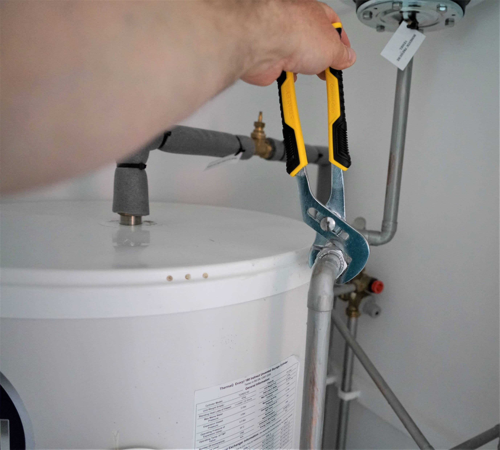
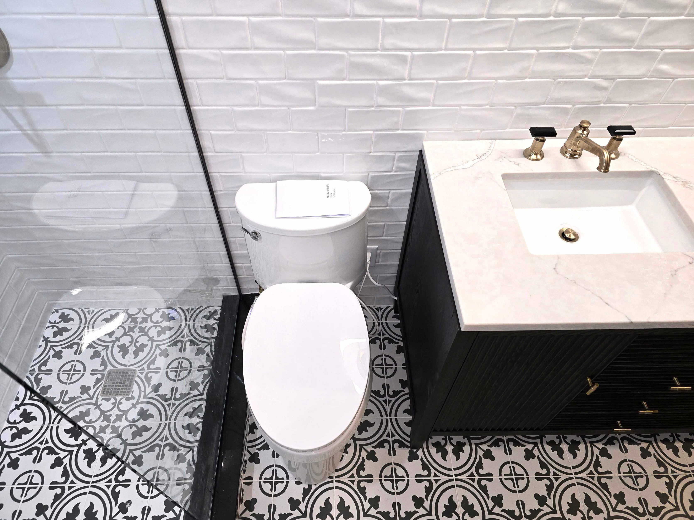

Sound Projects



Hours: Monday-Friday | 8:30AM - 4:30PM
Based in Albany Park | Serving the entire north side of Chicago
Licensed & Insured
LEAK DIAGNOSIS | DRAIN CLEANING | FIXTURE REPAIRS
BATHROOM & KITCHEN RENOVATIONS
WATER HEATER REPLACEMENT & RE-PIPING PROJECTS
EVERYTHING PLUMBING
SEE OUR FULL LIST OF SERVICES↓
SEE REVIEWS ↓
leak diagnosis/repair
drain cleaning/repair/installation
water & gas pipe repair/installation
shower & bathtub repair/installation
water heater installation/repair
bathroom renovation & remodeling
toilet repair/installation
seal & hardware replacement
float switch replacement
sink & faucet repair/installation
garbage disposal repair/installation
kitchen renovation & remodeling
sump pump repair/installation
hot water recirculation pump installation/repair
shutoff valve replacement
tankless system installation
everything plumbing
"We really trust Sound to take care of us and charge a fair price. While we don't like to have to call them, we appreciate their expertise, promptness, and professionalism."
Mary T.
"First-review worthy! Kevin, Mitch, Debbie, the whole Sound Plumbing crew, they are amazing. They are not only pros who somehow leave my house cleaner than when they arrived, they are kind and caring as well."
C.M.
"Can't speak highly enough about the work Kevin and team did for my wife and I on our little workers cottage rehab. Complete rebuild of our system, to perfect specs. Comms were excellent, price was spot on, and the guys hustled like crazy to get it done under a tight schedule."
Hunter H.
"I noticed a gas smell coming from our dryer shut-off valve after disconnecting the dryer; they said they'd squeeze me in the next day to get it taken care of. Kevin came out on the early side of the appointment, took his shoes off before coming in the house without me asking and replaced the valve within 15 minutes. Super easy experience; super nice people; will definitely be calling them out again for any future issues!"
Alyssa N.
5 stars all around for Sound Plumbing! I requested a quote through Yelp and within 20 mins was scheduled for the following day. Prompt arrival within the 1-hour window, removed shoes without asking, got straight to business and resolved the clogged tub right away! 10/10 will call again for any plumbing issues and you should too!
Dave C.
Responsive. Affordable. Explained everything and was super transparent about what needed to be done. Excellent service!
Jenna E.
If your toilet isn't flushing consistently, it could be due to a few common issues like a clog, a low water level in the tank, a faulty flapper, or clogged rim jets, among other potential issues. Waste buildup in the pipes or bowl can cause a clog, preventing water from flowing properly. Insufficient water in the tank could mean there isn't enough force to flush effectively. A worn or damaged flapper (the rubber flap at the bottom of the tank) might not seal properly, causing water to leak into the bowl and reducing the water level in the tank. The rim jets in the rim of the toilet bowl are responsible for creating a powerful flush. If they become clogged, your toilet won't flush properly. Inlet holes under the bowl's lip that eject water during a flush can become blocked, preventing proper filling. A cracked overflow tube can cause water to leak out of the tank, reducing the water level. Problems with the Fill Valve or Float Assembly can also cause many common issues. These components regulate the water level in the tank, and if they are damaged or dirty, they may not work correctly.
There a number of reasons why your water pressure could be low. In older buildings, corrosion, debris, and mineral buildup can narrow pipes and impede water flow. In some cases, small leaks in other parts of the system can reduce the amount of water available, causing a noticeable drop in pressure. Over time, fixtures like faucets and showerheads can become clogged or develop internal issues that restrict water flow. If multiple taps are being used simultaneously, or if you live in a shared building the overall water pressure can drop during times of high demand usage.
Leaky toilets and dripping faucets are common culprits of water waste. If the toilet continues to run after flushing, or there is a constant drip from one of your faucets it can waste a significant amount of water. Hidden pipe leaks can also be a cause of water waste, especially undetected leaks underground or in basements. If your yard has a spot that's consistently wet, it could be a sign that there's a leak somewhere in the line underground. Excessive laundry, appliance usage, and lawn & garden care can also add up quickly on your water bill. Water-Cooled Air Conditioners can also contribute to higher water bills.
We advise against using any heavy duty chemical cleaners, especially in a building with older pipes, as they can damage plumbing systems and potentially create a much worse situation than you started with.
Here are some considerations regarding Tankless systems:
Gas Tankless Heaters require proper ventilation to exhaust combustion gases. We follow manufacturer's and local code requirements for clearances around the unit, including space for ventilation, access, and maintenance. We would need to assess any location in person prior to planning an installation.
ADVANTAGES OF A TANKLESS SYSTEM:
Long term energy savings: Though a tankless water heater typically costs more initially, it usually costs less to operate because of lower energy use—since it only heats water when required instead of continuously maintaining a tank of heated water. Even homes or buildings with high demand for hot water may realize some level of savings. If instant hot water at taps at limited hours is a priority, a recirculation system can be accommodated by using an aquastat and timer to decrease the added heat loss from the recirculation system. If the storage tank of an electric heater is highly insulated, so that the outer surface of the tank is only slightly warmer than the ambient air, the savings with a tankless heater is less.
Savings in water use: Users in remote points in the building do not have to run the hot water as long, waiting for it to get to the faucet.
Unlimited hot water: Though flow rate determines the amount of hot water the heater can produce, it can deliver it at that flow rate indefinitely. However, this can also be an ecological disadvantage, as running out of hot water limits use, but a tankless heater provides no such limit.
Less physical space: Most tankless water heaters can be mounted on a wall or internally in a building's structure. This means less physical space must be dedicated to heating water. Even systems that can't be mounted on walls take up less space than a tank-type water heater.
Reduced risk of water damage: No stored water means there is no risk of water damage from a tank failure or rupture, though pipe or fitting failure remains possible.
Temperature compensation: A temperature-compensating valve tends to eliminate the issue where the temperature and pressure from tankless heaters decrease during continuous use. Most new generation tankless water heaters stabilize water pressure and temperature by a bypass valve and a mixing valve incorporated in the unit. Modern tankless are not inversely proportional, because they regulate the amount of water they heat and discharge, and therefore stabilize water temperature by using a flow control valve. Temperature change, not flow speed, is the issue the water heater must address. The wider the temperature rise, the less flow from the unit—the smaller the temperature rise, the greater the flow. The flow control valve, in conjunction with thermistors, maintains a stable temperature throughout the use of the unit.
Safety: Tankless water heaters precisely control water temperature, which means dangerous temperature levels and spikes are less likely.[10] An additional safety advantage stems from reduced exposure to dissolved toxic metals, which tend to occur at higher concentrations in hot water which has resided in a conventional water heater tank for significant periods of time.
POTENTIAL DIS-ADVANTAGES OF A TANKLESS SYSTEM:
Operation with low supply pressure: Tankless systems are reliant on the water pressure that is delivered to the property. In other words, if a tankless system is used to deliver water to a shower or water faucet, the pressure is the same as the pressure delivered to the property and cannot be increased, whereas in tanked systems the tanks can be positioned above the water outlets (in the loft/attic space for example) so the force of gravity can assist in delivering the water, and pumps can be added into the system to increase pressure. Power showers, for example, cannot be used with tankless systems because the tankless systems cannot deliver the hot water at a fast enough flow rate required by the pump.
Intermittent-use: There is a short delay (1–3 seconds) between when the water begins to flow and when the heater's flow detector activates the heating elements or gas burner. In the case of continuous-use applications (showers, baths, washing machines) this is not an issue as the heater never stops heating. However, for intermittent-use applications (i.e., turning off/on a hot water faucet at a sink) this can result in initially hot water, followed by a small amount of cold water as the heater re-activates, followed again by hot water. This is particularly an issue if hot water pipes are poorly insulated. The user experience is that after initially getting hot water flowing, the user turns off the valve and then a short time later turns the valve back on again. Hot water starts flowing once again at the valve from the hot water already in the piping, but at the same time, some heaters must let some amount of cold water into the piping during the reactivation time. Some time later (depending on the length of piping from the tank to the valve) this cold section of water arrives at the sink, followed shortly thereafter by hot water again. The initial thought of the user can be that the heater is failing intermittently.
Achieving cooler temperatures: Tankless water heaters often have minimum flow requirements before the heater is activated, and this can result in a gap between the cold water temperature, and the coolest warm water temperature that can be achieved with a hot and cold water mix.
Incompatibility with Recirculation systems: Since a tankless water heater is inactive when hot water is not being used, they are incompatible with passive (convection-based) hot water recirculation systems. They may be incompatible with active hot water recirculation systems and certainly use more energy to constantly heat water within the piping, defeating one of a tankless water heater's primary advantages. On-demand recirculating pumps are often used to minimize hot water wait times from tankless water heaters and save water being wasted down the drain. On-demand recirculating pumps are activated by push-button or other sensor. A water contacting temperature probe installed at the hot water usage point signals the pump to stop. Single-cycle pumping events only occur when hot water is needed, thereby preventing the energy waste associated with constantly heating water within piping.
Time-of-use metering and peak electrical loads: Tankless electric heaters, if installed in a large percentage of homes within an area, can create demand management problems for electrical utilities. Because these are high-current devices, and hot water use tends to peak at certain times of the day, their use can cause short spikes in electricity demand, including during the daily peak electrical load periods, which increases utility operating costs. For households using time-of-use metering (where electricity costs more during peak periods such as daytime, and is cheaper at night), a tankless electric heater may actually increase operating costs if the hot water is used during peak times.[citation needed] Instantaneous-type heaters are also problematic if they are connected to district heating systems, as they raise peak demands, and most utilities prefer all buildings to have hot water storage.
Want a specialist to come out and see the viability of a tankless system in your space? Give us a call.
When renovating a kitchen or bathroom, plumbing considerations involve assessing existing pipes, planning for water needs, ensuring proper drainage, and selecting fixtures that meet your needs and comply with local Chicago codes.
Assessment of Current Space:
Pipe Condition: We can check the condition of your existing pipes, as old or corroded pipes can lead to leaks and require replacement.
Layout: We will Determine the location of your water supply lines and drain pipes, as this will influence where you can place showers, toilets, sinks, dishwashers, appliances, etc.
Water Pressure and Flow Rate: We can assess the plumbing system to ensure you have adequate water pressure and flow rate to support your new fixtures and appliances. This is a particular consideration in many of Chicago's vintage buildings with restrictions of pressure in older pipes.
Interested in some help with your kitchen or bathroom rehab? Give us a call.
Serving the entire north side of Chicago, Sound offers solid workmanship and plumbing solutions carried out by professional crew at a reasonable cost.
Contact:
Phone: 773.306.9494
Email: soundplumbing@gmail.com